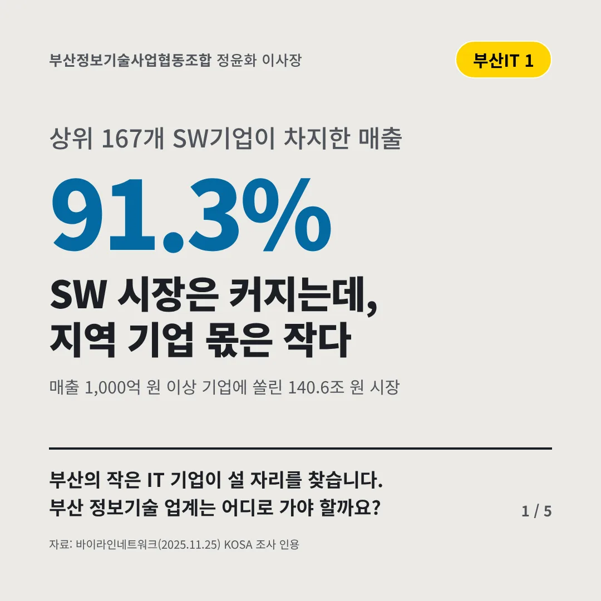
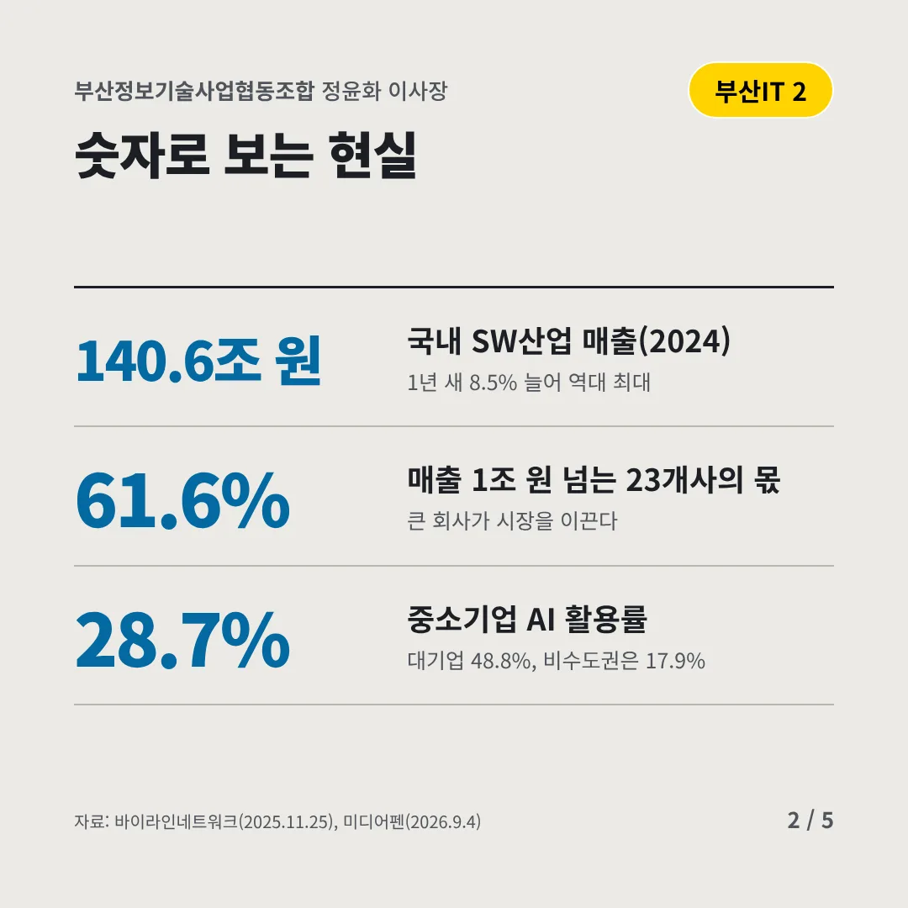
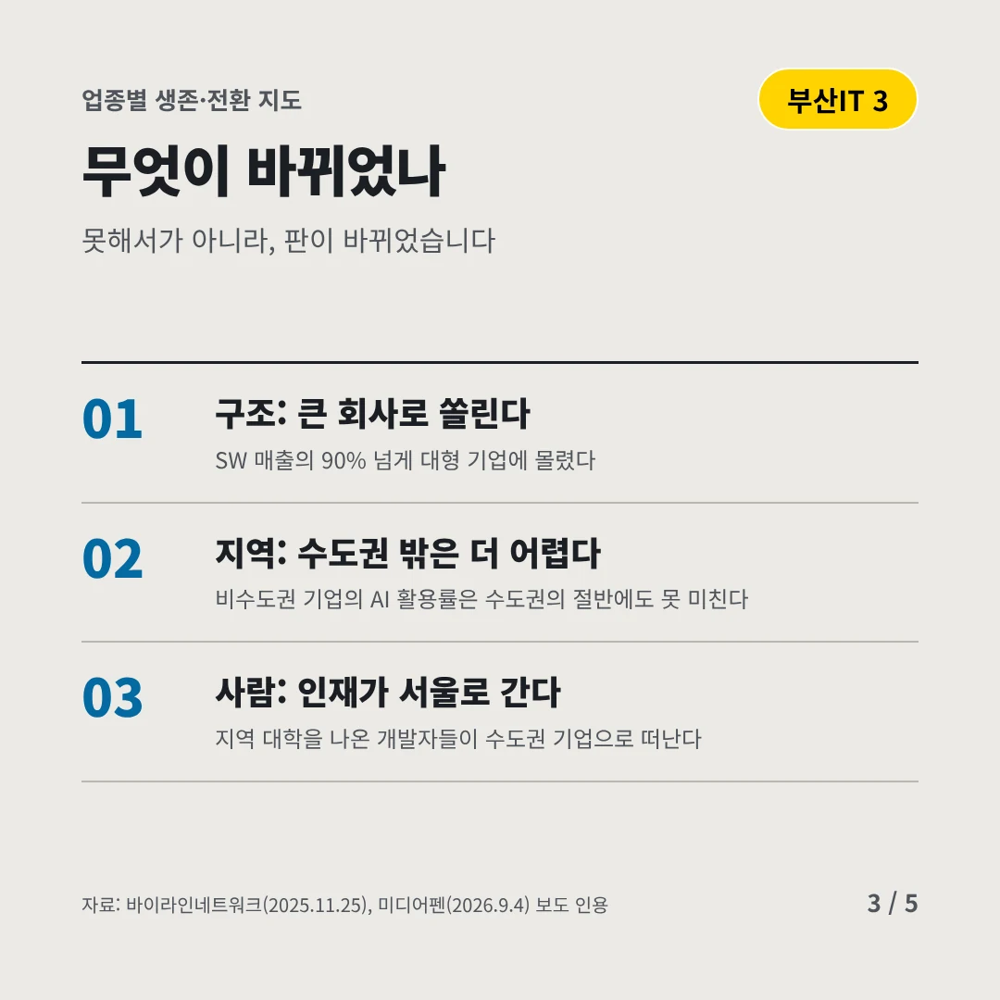
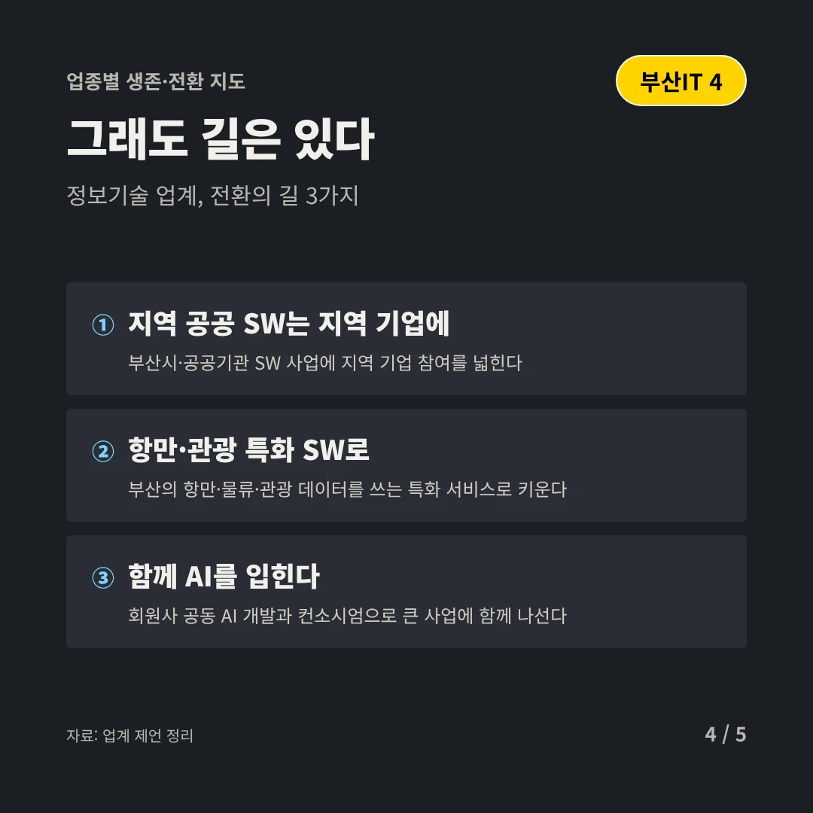
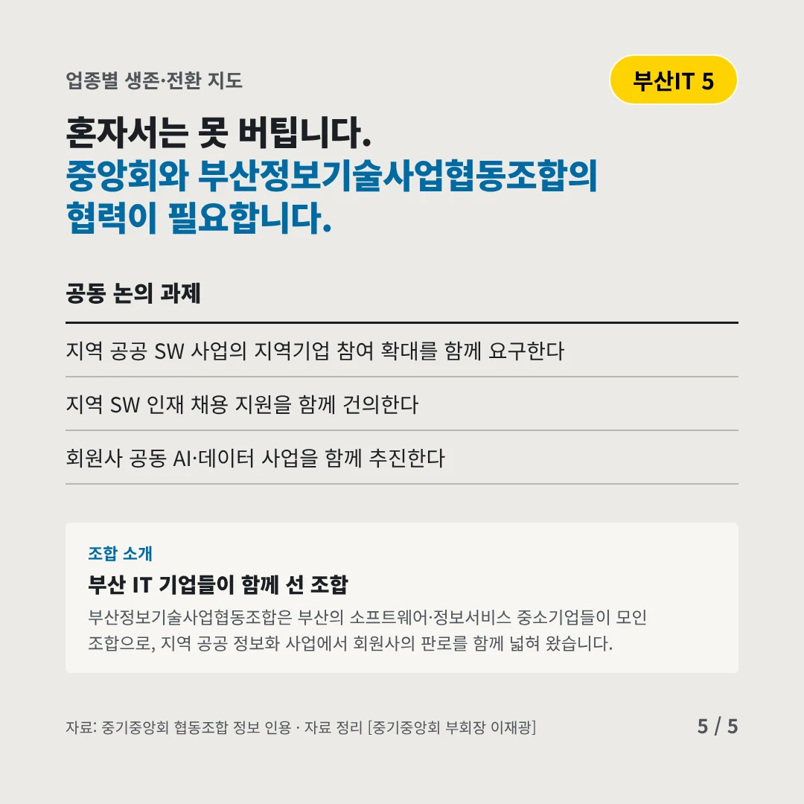
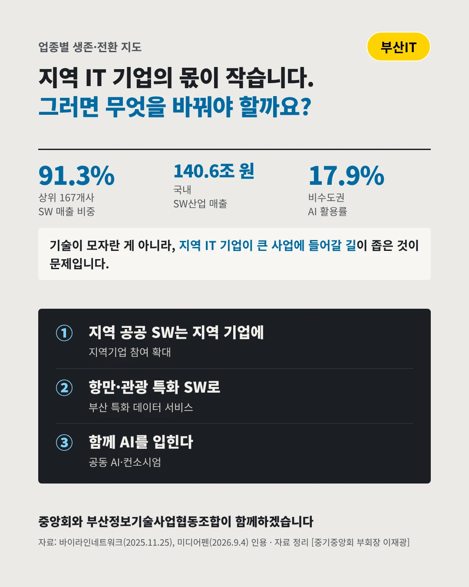

부산정보기술사업협동조합
SW 시장은 커지는데, 지역 기업 몫은 작다
91.3% 상위 167개 SW기업이 차지한 매출






부산의 작은 IT 기업이 설 자리를 찾습니다. 부산 정보기술 업계는 어디로 가야 할까요?
숫자로 보는 현실
- 140.6조 원국내 SW산업 매출(2024)1년 새 8.5% 늘어 역대 최대
- 61.6%매출 1조 원 넘는 23개사의 몫큰 회사가 시장을 이끈다
- 28.7%중소기업 AI 활용률대기업 48.8%, 비수도권은 17.9%
무엇이 바뀌었나
- 구조: 큰 회사로 쏠린다SW 매출의 90% 넘게 대형 기업에 몰렸다
- 지역: 수도권 밖은 더 어렵다비수도권 기업의 AI 활용률은 수도권의 절반에도 못 미친다
- 사람: 인재가 서울로 간다지역 대학을 나온 개발자들이 수도권 기업으로 떠난다
그래도 길은 있다
- 지역 공공 SW는 지역 기업에부산시·공공기관 SW 사업에 지역 기업 참여를 넓힌다
- 항만·관광 특화 SW로부산의 항만·물류·관광 데이터를 쓰는 특화 서비스로 키운다
- 함께 AI를 입힌다회원사 공동 AI 개발과 컨소시엄으로 큰 사업에 함께 나선다
한 장 요약

조합 소개
부산정보기술사업협동조합은 부산의 소프트웨어·정보서비스 중소기업들이 모인 조합으로, 지역 공공 정보화 사업에서 회원사의 판로를 함께 넓혀 왔습니다.
자료: 바이라인네트워크(2025.11.25), 미디어펜(2026.9.4)